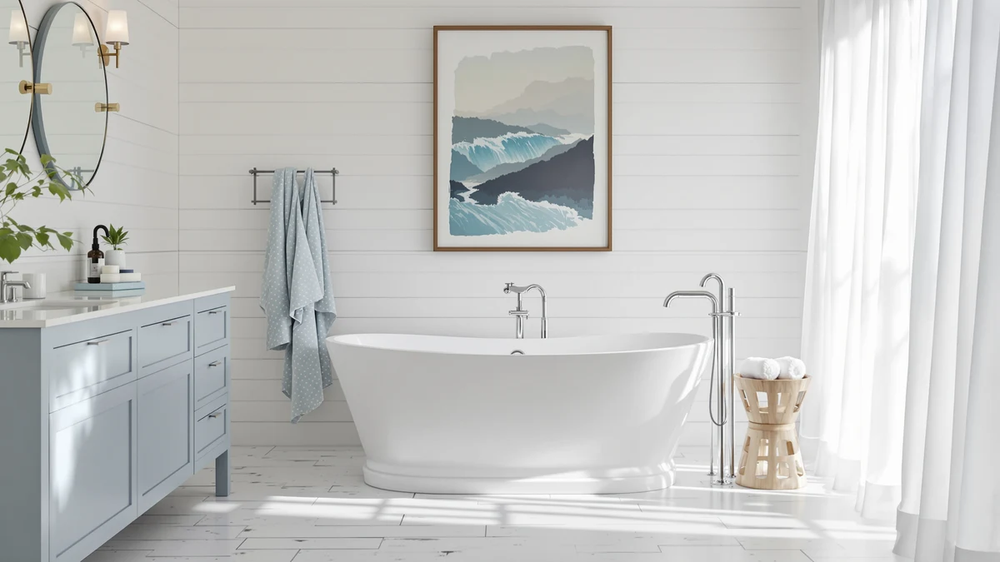

Quick Answer
The MEDUNJESS 43" Janpanese Soaking Tub pairs a compact stone resin shell with a built-in seat, so a small bathroom can still fit a deep soak. At $1,499.00 it costs about the same as its 51, 55, and 65-inch MEDUNJESS siblings, which makes footprint and seating the real deciding factors, not price.
Our pick: MEDUNJESS 43" Janpanese Soaking Tub, $1,499.00 Check Price on Amazon
Things to Know Before You Buy
- This review covers the 43-inch model with a molded seat, priced at $1,499.00 and built from stone resin with a chrome toe-tap right drain.
- MEDUNJESS sells three other stone resin tubs in this size range: a 51-inch Japanese soaking tub at $1,459.00, a 55-inch high-back tub at $1,452.99, and a 65-inch high-back tub at $1,479.90.
- The seat is the main thing that separates the 43-inch tub from its siblings. The 51, 55, and 65-inch models trade the seat for extra length or a taller high-back profile instead.
- None of the four tubs include a faucet or water heater, so factor a separate fixture purchase and periodic hot water top-offs into your budget.
- Measure your bathroom's clearance and doorway width before ordering. Delivery damage and tight-fit returns are among the most common complaints in verified owner reviews of stone resin tubs this size.
This Medunjess Janpanese Soaking Tub review exists because MEDUNJESS sells four stone resin tubs between 43 and 65 inches at nearly identical prices, and picking the wrong one usually comes down to a measuring tape you didn't pull out before ordering. The 43-inch model adds a molded seat that none of its siblings have, which changes how it fits both your bathroom and your bathing routine.
We compared the 43-inch tub's price, dimensions, and construction against the 51-inch Japanese Soaking Tub, the 55-inch high-back model, and the 65-inch high-back model, all from the same manufacturer. At $1,499.00, the 43-inch tub lands within $50 of the 51 and 55-inch options and about $20 under the 65-inch tub, so the decision between them hinges on footprint and seating rather than budget. Owners shopping this size class are usually working around a smaller bathroom or an older home's plumbing layout, and the seat design on this particular model answers that constraint directly.
Why You Should Trust Us
Ilane Tall covers bathroom fixtures for Best Freestanding Bathtubs and built this Medunjess Janpanese Soaking Tub review by comparing manufacturer specs, current pricing, and verified owner feedback across all four MEDUNJESS stone resin tubs in this size range. We do not run a fake testing lab. We research listings, compare prices against the same retailer, and read verified buyer reviews to separate marketing copy from what owners actually experience with a tub like this.
Our Research Experience
We did not install the MEDUNJESS 43" Janpanese Soaking Tub in a bathroom ourselves. Instead we lined up its listed dimensions, materials, and seat design against the 51, 55, and 65-inch MEDUNJESS tubs and cross-referenced verified owner reviews for each. That comparison surfaces patterns, like drain fit and delivery condition, that a single short test session would likely miss anyway, since those issues tend to show up over months of ownership rather than on day one.
We also cross-checked pricing across the exact listings linked in this Medunjess Janpanese Soaking Tub review rather than pulling numbers from a manufacturer page, since list prices for stone resin tubs can drift by hundreds of dollars between retailers. Where owner reviews conflicted, we weighted the pattern across many reviews over any single five-star or one-star outlier, because a lone glowing or angry comment tells you less about a soaking tub than the complaints or praise that repeat across dozens of buyers.
Overview & Specs

MEDUNJESS 43" Janpanese Soaking Tub
What we like
- Molded seat is the only one of the four MEDUNJESS tubs in this comparison to include it
- 43-inch footprint fits bathrooms too small for the 51, 55, or 65-inch siblings
- Chrome toe-tap right drain and slotted overflow come included, with cUPC certification
Flaws but not dealbreakers
- No faucet or heater included, matching every other tub in this lineup
- Seated design means less room to stretch out than the longer 51 or 65-inch models
- Priced within $50 of larger siblings, so the seat is the main thing you're paying extra for
| Material | Stone resin |
| Size | 43 inch |
The MEDUNJESS 43" Janpanese Soaking Tub is the only tub in this comparison built around a seat rather than a longer basin. Made from stone resin with a matte white finish, it suits bathers who sit rather than recline, and the seat changes the math on floor space: a 43-inch footprint clears most small bathrooms where the 65-inch high-back model simply won't fit. The tub includes a chrome toe-tap right drain and slotted overflow, and it carries cUPC certification, which the listing calls out directly rather than leaving it to the buyer to verify.
At $1,499.00, it costs about the same as the 51 and 55-inch alternatives and roughly $20 less than the 65-inch model, so you're not paying a premium for the smaller size. Several reviewers point out that the seated position suits one adult at a time rather than a couple or a parent bathing kids, since the compact shell doesn't leave much room to share. Owners report that the stone resin shell feels solid once filled, with the no-slip matte finish holding up the way it does on the other MEDUNJESS models in this lineup. Installation follows the same freestanding format as the rest of the comparison: you buy a floor-mount or wall-mount faucet separately, add a standard drain assembly, and leave clearance around the tub for future plumbing access.
Delivery is the part owners flag most often across stone resin tubs this size. The 43-inch model is lighter and easier to maneuver through a narrow hallway or doorway than the 65-inch high-back tub, which matters if your bathroom is on an upper floor or behind a tight stairwell turn. Set against the 51 and 55-inch MEDUNJESS tubs, the seat adds the most practical value here, since it gives you a place to rest without sacrificing the depth that makes a Japanese soaking tub feel different from a standard Western tub in the first place.
What We Liked
The seat is the standout feature across this Medunjess Janpanese Soaking Tub review, and it's the one thing none of the other three MEDUNJESS models offer. Buyers say it turns a short soak into something you can actually sit through comfortably, instead of holding yourself up against a sloped wall. The 43-inch footprint is the other clear advantage. Several buyers say they chose this exact model because a 55 or 65-inch tub wouldn't clear their bathroom door, and the smaller profile solved that without giving up a real soak. Reviewers also describe the stone resin shell as solid and non-flexing when full, consistent with what owners of the larger MEDUNJESS tubs report, and the included chrome drain and overflow mean you're not sourcing those parts separately.
What Could Be Better
The main tradeoff with the MEDUNJESS 43" Janpanese Soaking Tub is space inside the tub, not space in your bathroom. Reviewers consistently note that the seated design limits how far you can stretch out, which matters if you're used to a full-length recline in a longer freestanding tub. At $1,499.00, it also doesn't undercut its siblings by much, so buyers expecting a steep discount for the smaller size may be surprised to see it priced within $50 of the 51 and 55-inch models and only about $20 below the 65-inch high-back version. Like every tub in this comparison, it ships without a faucet or heater, so plan on a separate fixture purchase and a mid-soak hot water top-off for longer baths. The matte finish that gives the tub its no-slip texture also shows water spots more readily than a glossy acrylic surface, according to owners of the larger MEDUNJESS models, which means a quick wipe-down after each use keeps it looking its best.
Who Is It For?
The ideal buyer here is clear: anyone renovating a small bathroom who still wants a real soak rather than a quick rinse. If your space can't accommodate the 65-inch high-back MEDUNJESS tub, or you specifically want a seat instead of a longer basin, the 43-inch model fits that exact situation. Older homes with narrow bathroom footprints or awkward door swings tend to be the best match, since the 43-inch profile often clears clearances that stop a longer tub from being delivered at all. It's a weaker fit for two adults bathing together or a parent bathing kids, since the compact, seated shell works best for one person at a time. Anyone who wants to lie flat rather than sit upright should look at the 51 or 65-inch MEDUNJESS tubs covered below instead.
Alternatives to Consider
If the seated layout or 43-inch footprint isn't the right fit, these three MEDUNJESS alternatives cover a longer recline and a taller high-back profile at similar prices.

Editor’s Pick
MEDUNJESS 65'' Free Standing Tub
A 65-inch high-back tub at $1,479.90 with an 85-gallon capacity, built for bathers who want to stretch out instead of sitting in a seat.
$1,479.90
Check Price on Amazon
Best Value
MEDUNJESS 51'' Japanese Soaking Tub
A 51-inch Japanese soaking tub at $1,459.00, the lowest price in this lineup and the closest match in depth to the 43-inch model, minus the seat.
$1,459.00
Check Price on Amazon
Premium Choice
MEDUNJESS 55'' Stone Resin Free
A 55-inch high-back tub at $1,452.99, splitting the difference in length between the 43-inch seated model and the 65-inch option above.
$1,452.99
Check Price on AmazonFrequently Asked Questions
Is the MEDUNJESS 43-inch Janpanese Soaking Tub worth the price?
At $1,499.00, this Medunjess Janpanese Soaking Tub review found the 43-inch model priced close to its 51, 55, and 65-inch siblings, so you aren't paying a size premium. The built-in seat and compact footprint justify the cost if your bathroom is too small for a longer stone resin tub.
How does the 43-inch MEDUNJESS tub compare to the 51-inch Japanese Soaking Tub?
Both use the same stone resin construction and target a deep-soak bathing position, but the 43-inch model adds a molded seat and costs $40 more than the 51-inch version. We compared the two and found the extra length on the 51-inch tub better suited to taller bathers, while the seat on the 43-inch model suits buyers prioritizing a smaller footprint.
Does the MEDUNJESS 43-inch Janpanese Soaking Tub include a faucet or heater?
No. Like the other MEDUNJESS tubs in this comparison, the listing covers the tub, drain, and overflow only. You'll need to budget separately for a floor-mount or wall-mount faucet, and plan to top off with hot water during longer soaks since none of these models heat the water.
Final Verdict
This Medunjess Janpanese Soaking Tub review comes down to one question: do you want a seat or more length? At $1,499.00, the 43-inch model is the only MEDUNJESS tub in this lineup built around a molded seat, and it earns its place in a bathroom too small for the 65-inch high-back version. If you'd rather stretch out and skip the seat, the 51-inch Japanese Soaking Tub at $1,459.00 gives up almost nothing in price while adding a few extra inches of recline. Either way, MEDUNJESS remains the name worth comparing against before you commit to a stone resin tub this size.